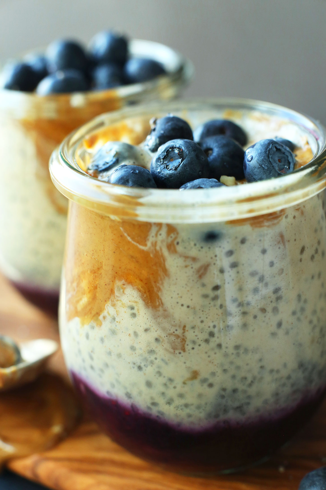

PB&J Chia Pudding

Scrumptious!
My youngest could live in PB&J, and if I'm being totally honest with myself, I could too. But I get burnout easily, especially when I'm trying to batch my meals for weekly prep. By Thursday, I'm so sick of PB&Js its not even funny. That's where this gem comes in. It's still the staple of peanut butter and jelly, but with a twist! This way you can still use your core ingredients, but also mix it up a little bit. Garnish with slivered almonds or chopped walnuts.
Ingredients
Compote
- 1 cup wild blueberries (fresh or frozen)
- 1 tbs orange juice
- 1 tbs chia seeds
Pudding
- 3 containers (small serving dishes or 6oz jars)
- 1 cup unsweetened non-dairy milk (preferrably almond)
- 1/2 cup light coconut milk (oatmilk is creamy enough, too.)
- 1 tsp vanilla extract
- 3 tbs natural peanut butter
- 1/3 cup chia seeds
- fresh blueberries for topping
- Saute blueberries and orange juice in a skillet on the stove on medium to high heat until bubbling.
- Then lower heat to medium and cook for 2 minutes. Stir ocassionally.
- Remove from heat and add chia seeds. Stir to combine.
- Divide the compote between three containers. Chill in fridge.
- Whiel that chills, add almond and coconut or oatmilk to a blender. Add vanilla, maple syrup, and peanut butter. Blend on high. Taste and adjust flavor as needed.
- Add chia seeds and pulse a few times. Do not go crazy on this step. You need whole seeds!
- Transfer into a measuring glass of some kind and chill in the fridge for 10 minutes.
- Remove both the compoute and pudding. Give the pudding a stir, then divide it between the three glasses containing compote.
- Cover well and store in fridge for atleast 2 hours.
- To serve, top with blueberries, maple syrup, a dab of peanut butter, or even a dash of cinnamon.